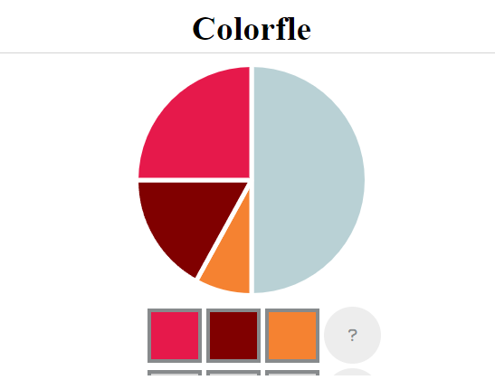

Jocs diaris:
El concepte de jocs diaris té molta popularitat. Es tracta de jocs breus que només es poden jugar un cop cada 24h. Cada dia és el mateix concepte amb una solució diferent: endevina la paraula, endevina l'angle... Segur que tothom hi ha jugat algún cop. Aquests són alguns dels més coneguts:
- LA PARAULA DEL DIA: El clàssic per excelència. Consisteix a introduïr paraules per a trobar quines lletres coincideixen amb la resposta. Cada dia una paraula. També té una versió contrarrellotge.
- GUESS THE ANGLE: Aquest requereix precisió. Has d'aproximar el màxim possible quants graus té l'angle que et plantegen. Si encertes el número exacte, guanyes!
- COLORFLE: Un joc més artístic. És recomanable repassar-se abans la composició de colors. Tens un color format per la barreja de quatre colors en diferentes proporcions. El teu objectiu? Identificar-los.
- RALLY52: No és un joc que destaqui pels seus gràfics, però és altament addictiu. Un rally que derrapa massa en un circuit ple de corves. Què pot sortir malament?
- MOTS ENCREUATS: Els més clàssics diran que un joc que es publica al diari no pot ser considerat un joc de navegador, però amb la oferta de premsa digital que existeix avui dia, és impossible no esmentar-los. En destaquen El País i El Diario, amb una gran varietat de jocs online disponibles.
